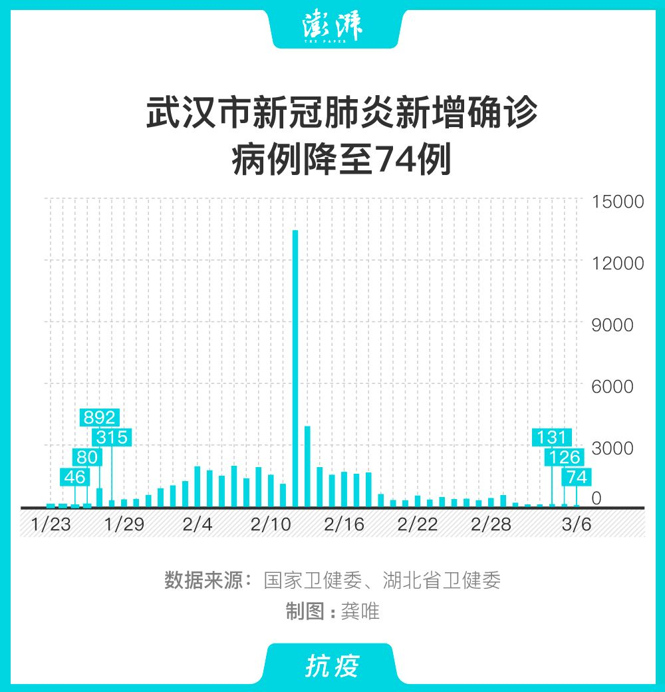
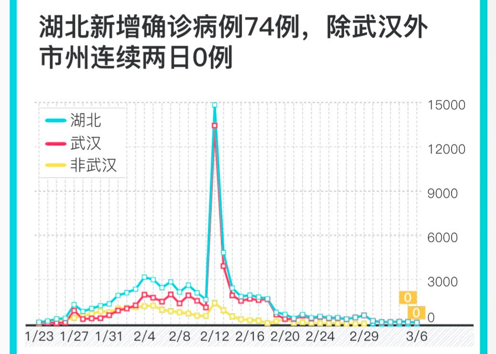

湖北以外新增17例，其中16例来自境外
原文链接 备份链接 国家卫健委网站 澎湃新闻记者 马作鹏 3月5日0-24时，31个省（自治区、直辖市）和新疆生产建设兵团报告新增确诊病例143例，新增死亡病例30例（湖北29例,海南1例），新增疑似病例102例。 当日新增治愈出院病 …
国家卫健委网站
澎湃新闻记者 龚唯 马作鹏
3月6日0—24时，31个省（自治区、直辖市）和新疆生产建设兵团报告新增确诊病例99例，新增死亡病例28例（湖北28例），新增疑似病例99例。
当日新增治愈出院病例1678例，解除医学观察的密切接触者4773人，重症病例减少248例。
截至3月6日24时，据31个省（自治区、直辖市）和新疆生产建设兵团报告，现有确诊病例22177例（其中重症病例5489例），累计治愈出院病例55404例，累计死亡病例3070例，累计报告确诊病例80651例，现有疑似病例502例。累计追踪到密切接触者672458人，尚在医学观察的密切接触者26730人。
湖北新增确诊病例74例（武汉74例），新增治愈出院病例1502例（武汉1157例），新增死亡病例28例（武汉21例），现有确诊病例21239例（武汉19011例），其中重症病例5359例（武汉5028例）。累计治愈出院病例43468例（武汉28511例），累计死亡病例2959例（武汉2349例），累计确诊病例67666例（武汉49871例）。新增疑似病例47例（武汉46例），现有疑似病例301例（武汉256例）。


3月6日0—24时，新增报告境外输入确诊病例24例（甘肃17例，北京3例，上海3例，广东1例）。截至3月6日24时，累计报告境外输入确诊病例60例。
累计收到港澳台地区通报确诊病例162例：香港特别行政区107例（出院51例，死亡2例），澳门特别行政区10例（出院10例），台湾地区45例(出院12例，死亡1例)。
本期编辑 常琛
推荐阅读


原文链接 备份链接 国家卫健委网站 澎湃新闻记者 马作鹏 3月5日0-24时，31个省（自治区、直辖市）和新疆生产建设兵团报告新增确诊病例143例，新增死亡病例30例（湖北29例,海南1例），新增疑似病例102例。 当日新增治愈出院病 …
原文链接 备份链接 国家卫健委网站 澎湃新闻记者 马作鹏 2月18日0—24时，31个省（自治区、直辖市）和新疆生产建设兵团报告新增确诊病例1749例，新增重症病例236例，新增死亡病例136例（湖北132例，黑龙江、山东、广东、贵州各1 …
原文链接 备份链接 武汉疫情防控持续保持严格措施，疫情形势出现一些积极变化，但近日武汉每天仍有新增确诊病例数百人。这些新增确诊病例主要从哪里来？“新华视点”记者进行了追踪。 80%-90%来自疑似病例 有些隔离点密接人群确诊比例高于5% …
原文链接 备份链接 图片来源：视觉中国 作者：秦交锋、廖君、刘宏宇 本文来源：新华网 “ 武汉疫情防控持续保持严格措施，疫情形势出现一些积极变化，但近日武汉每天仍有新增确诊病例数百人。这些新增确诊病例主要从哪里来？“新华视点”记者进行了追 …
原文链接 备份链接 2月19日以来，武汉新增病例在300-500区间出现一个持续10天之久的“拉锯期”，不难想像战况之惨烈。但指标显示这种胶着局面将很快结束，进入一马平川阶段 文 |《财经》数据研究员 徐进 图 |《财经》 …